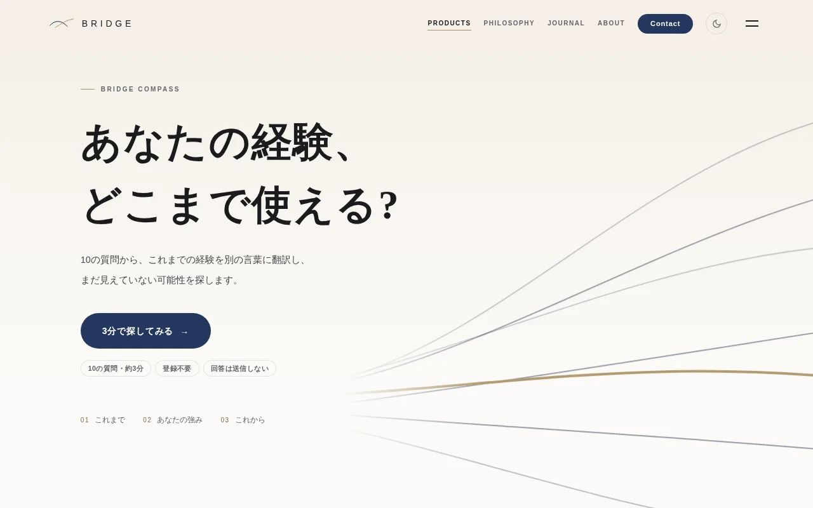
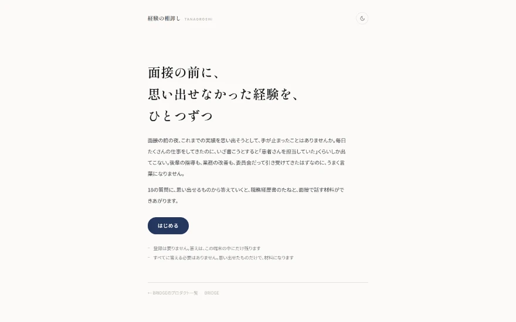

ここでは、いろいろ試しています
作ったものを、直しながら置いています。ここに並べたものは無料で、登録もいりません。入力はこの端末の中にだけ残ります。
公開
BRIDGE Compass
毎日やっている仕事を、病院の外で通じる言葉に置き換えてみる道具です。たとえば――
- 申し送り
- 要点を絞った情報の引き継ぎ
- 患者評価
- 課題発見・仮説検証

小さく試しているもの

ぜんぶで29個あります。一覧を見る
臨床だけをしていた頃、事業会社で働くとは思っていませんでした。
外に出てみると、病院で当たり前にやっていた調整や記録が、別の場所では別の名前で呼ばれていました。
道は、病院の外にも続いています。それが見えるものを、ひとつずつ作っています。
理学療法士の私(橋本渉)が、ひとりで運営しています。